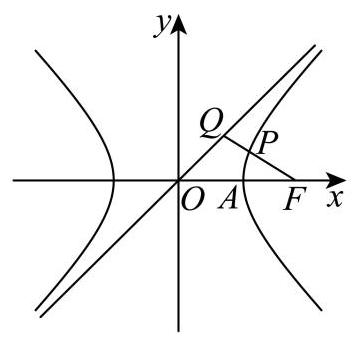
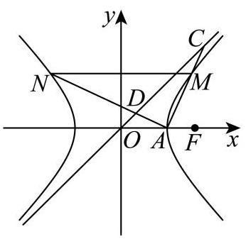

填空题
按本区原卷题号顺序排列。
杨浦 · 第1题 ★☆☆☆☆ · 教师预估
本题资料或解析有待核事项，预览不可作为已审定成品。
设全集 U={x∣1≤x≤6,x∈Z},B={1,2} ，用列举法表示 ðUB= ___.
考点：列出全集后求补集。
难度依据：基本集合运算
核查说明：合并MD补集符号出现非标准OCR字符，需回看PDF恢复。
展开答案与解析
杨浦 · 第2题 ★☆☆☆☆ · 教师预估
计算 i=1∑n(2i−1)= ___.
考点：前n个奇数求和。
难度依据：套等差数列求和
展开答案与解析
杨浦 · 第3题 ★☆☆☆☆ · 教师预估
若幂函数 y=xa 的图像经过点 (3,33) ，则实数 a= ___.
考点：代入点坐标解指数。
难度依据：指数幂运算
展开答案与解析
杨浦 · 第4题 ★★☆☆☆ · 教师预估
在 (x+x2)6 的二项展开式中，常数项的值为___.
考点：通项指数为零求常数项。
难度依据：二项展开通项
展开答案与解析
杨浦 · 第5题 ★☆☆☆☆ · 教师预估
设正实数 a,b 满足 a+b=3 ，则 a2+b2 的最小值为___.
考点：基本不等式或完全平方确定最小值。
难度依据：定和构造基本不等式
展开答案与解析
杨浦 · 第6题 ★★☆☆☆ · 教师预估
不等式 3x+log2x<3 的解集为___.
考点：构造单调函数并与特殊值比较。
难度依据：识别整体单调与定义域
展开答案与解析
杨浦 · 第7题 ★★☆☆☆ · 教师预估
已知圆锥的底面半径为 1,体积为 33π ,则该圆锥的侧面积为___.
考点：由体积求高、母线和侧面积。
难度依据：空间几何量计算
展开答案与解析
杨浦 · 第8题 ★★☆☆☆ · 教师预估
直线 l:(a−3)x+(2a+1)y−3=0 的一个法向量是 n=(3,2) ，则实数 a= ___.
考点：直线系数向量与给定法向量共线。
难度依据：运用法向量坐标关系
展开答案与解析
杨浦 · 第9题 ★☆☆☆☆ · 教师预估
已知随机变量 X 服从二项分布 B(90,p) ，若 E[X]=30 ，则 D[X]= ___.
考点：由期望求概率再求方差。
难度依据：直接利用分布公式
展开答案与解析
杨浦 · 第10题 ★★★☆☆ · 教师预估
本题资料或解析有待核事项，预览不可作为已审定成品。
设集合 A={z∥z+1∣=∣z−a∣,z∈C},B={z∥z∣=1,z∈C} ，若 A∩B=∅ ，则实数 a 的取值范围是___.
考点：模的几何意义转化圆与直线相交，讨论退化。
难度依据：需处理两定点重合的退化情形
核查说明：合并MD集合定义中绝对值与条件分隔符错乱，需对原卷修复。
展开答案与解析
杨浦 · 第11题 ★★★★☆ · 教师预估
掷实心球时，将轨迹视为抛物线的一部分，设实心球离手位置在起掷点 O 正上方 2 米, 出手角度 a 即抛物线在该处切线与水平地面所成角,如图所示. 已知实心球轨迹最高点距离地面 3 米,若要成绩不小于 10 米 (实心球落地点到起掷点的距离),则出手角度 a 的最大值为___. (精确到 0.1∘ ).

考点：建立抛物线轨迹，利用高度和射程约束求切线角。
难度依据：建模并转化为参数取值
展开答案与解析

杨浦 · 第12题 ★★★★★ · 教师预估
记 a1,a2…,am 是空间中的 m(m∈N,m≥1) 个不同的非零向量,满足: ①其中任意向量在其它向量方向上的投影均为其本身或零向量; ②其中任意三个向量 ai 、 aj 、 ak 均不能使 ∣ak∣1ak=21(∣ai∣1ai+∣aj∣1aj) 成立，则 m 的最大值为___.
考点：投影条件确定三条互相垂直方向及每方向容纳数。
难度依据：须证明上界与给出可取构造
展开答案与解析
选择题
按本区原卷题号顺序排列。
杨浦 · 第13题 ★☆☆☆☆ · 教师预估
设 a>b ，下列不等式中恒成立的是( )
A. a1<b1
B. a2>b2
C. a3>b3
D. ∣a∣>∣b∣
考点：利用单调性判真并以反例排除。
难度依据：基本性质判断
展开答案与解析
杨浦 · 第14题 ★☆☆☆☆ · 教师预估
事件 A 、 B 相互独立,若 P(A)=21,P(B)=31 ,则 A 与 Bˉ 同时发生的概率为 ( ) .
A. 0
B. 61
C. 65
D. 31
考点：独立性与对立事件乘法。
难度依据：直接概率运算
展开答案与解析
杨浦 · 第15题 ★★★☆☆ · 教师预估
已知函数 y=f(x) 和 y=g(x) 的定义域都为 R 且都存在导函数. 若 y=f(x) 和 y=g(x) 的零点均有且仅有 x=0 ,且当 x=0 时恒有 f(x)<g(x) ,则下列情形中不可能的是 ( ) .
A. 0 是 y=f(x) 的极大值点,也是 y=g(x) 的极大值点
B. 0 是 y=f(x) 的极小值点,也是 y=g(x) 的极小值点
C. 0 是 y=f(x) 的极大值点,也是 y=g(x) 的极小值点
D. 0是 y=f(x) 的极小值点,也是 y=g(x) 的极大值点
考点：构造实例并结合邻域大小判断极值可能性。
难度依据：区分极值定义与全局符号结论
展开答案与解析
杨浦 · 第16题 ★★★★★ · 教师预估
已知数列 {an} ,给出以下定义: 若存在常数 k>0 ,对于任意的 n∈N∗ ,都有 an+2−an+1≥k(an+1−an) ,则称数列 {an} 为 “ k -加速数列”,现给出下列命题:
①若 an=n1 ，则对任意 k>0 ，数列 {an} 都不是 “ k -加速数列”；
②若数列 {an} 是 “1 - 加速数列”，且 an∈Z ， a1=a2026=2026 ，则数列 {an} 存在最小项； ③若数列 {an} 是 “2 -加速数列”，且 a1=1,a2=2 ，则存在 M>0 ，使得 ∣an∣<M ； ④正数列 {an} 是等比数列且公比 q=1 ，则 {an} 是 “ k -加速数列” 的充要条件是 k=1 . 其中正确的命题是( )
A. ①②③
B. ②
C. ②④
D. ③④
考点：差分变换判断四个命题及有界性。
难度依据：差分符号与全称参数多层分类
展开答案与解析
解答题
按本区原卷题号顺序排列。
杨浦 · 第17题 ★★★☆☆ · 教师预估
一次考试后，数学兴趣小组分析某班级考试成绩. 该班级共 40 人，将得分由高到低平均分为四组, 第一组 (均分最高的一组) 的数据为 141、140、138、134、133、133、133、132、132、132.
(1)求第一组的得分的均值与中位数；
(2)若从第一组中等可能的选取 2 名学生，求 2 人得分都在 135 分以上的概率；
(3)兴趣小组考察某客观题的得分情况. 将前 15 名学生作为高分组，后 25 名学生作为非高分组; 前 15 名学生中 13 人答对该题，后 25 名学生中 16 人答对该题.据此，填写表格，并判断是否有 95%的把握认为答对该题与进入高分组有关？
附: χ2=(a+b)(c+d)(a+c)(b+d)n(ad−bc)2P(χ2≥6.635)≈0.01,P(χ2≥5.024)≈0.025 , P(χ2≥3.841)≈0.05,P(χ2≥2.706)≈0.1.
考点：(1)均值与中位数；(2)组合求古典概率；(3)补列联表并进行卡方检验。
难度依据：三种统计概率方法转换
展开答案与解析
杨浦 · 第18题 ★★★☆☆ · 教师预估
本题资料或解析有待核事项，预览不可作为已审定成品。
如图，在直四棱柱 ABCD−A1B1C1D1 中， AB//CD ， AD⊥CD ， AB=2 ， AD=3 ， CD=4 .

(1)设 E 是 C1D1 的中点，求证: BE// 平面 AA1D1D ；
(2)若直四棱柱 ABCD−A1B1C1D1 的体积为 36，求平面 D1AC 与平面 ABCD 所成的锐二面角的大小.
考点：(1)构造平行四边形证明线面平行；(2)体积求高，构造二面角平面角。
难度依据：立体构造与截面三角形计算
核查说明：答案解析第503字符附近：损坏字符或字体覆盖风险，需回源并视觉检查（底稿扫描记录）
展开答案与解析

杨浦 · 第19题 ★★★☆☆ · 教师预估
已知函数 f(x)=2sinωx (常数 ω>0 ).
(1) 若 ω=1 ,在 ABC 中,角 A 、 B 、 C 的对边分别为 a 、 b 、 c . 若 f(A+2π)=−1,a=3b , 求角 B 的大小；
( 2 )若 y=f(x) 的最小正周期为 π ，将其图像向左平移 12π 个单位，再向上平移 h(h>0) 个单位得到函数 y=g(x) 的图像. 当 x∈[0,2π] 时恒有 g(x)>0 ,求 h 的取值范围.
考点：(1)同角关系与正弦定理解三角形；(2)周期、相位变换和闭区间最值。
难度依据：解三角形与区间取值两问转换
展开答案与解析
杨浦 · 第20题 ★★★★☆ · 教师预估
已知 A 、 F 分别是双曲线 Γ:x2−y2=λ (常数 λ>0 ) 的右顶点和右焦点,记 Γ 过一、 三象限的渐近线为 l0 .


( 1 )求双曲线 Γ 的离心率和渐近线 l0 的方程；
(2)设 λ=2 ， Q 是 l0 上一点，若线段 FQ 的中点 P 在双曲线 Γ 上，求点 Q 的坐标；
(3)设 λ=1 ，过 A 作两条相互垂直的直线与双曲线 Γ 交于 M 、 N 两点(M在第一象限)， 若直线 AM 、 AN 分别与 l0 交于 C 、 D 两点，且 △AMN 与 △ACD 的面积之比为 2，求直线 AM 的方程.
考点：(1)求离心率和渐近线；(2)设渐近线点并代入中点坐标；(3)设互相垂直直线，联立曲线和渐近线比较面积。
难度依据：直线参数与面积比综合计算
展开答案与解析
杨浦 · 第21题 ★★★★★ · 教师预估
设函数 y=f(x) 的定义域为 D ,值域 A⊆[−1,1] . 若 x1,x2∈D 且满足 f(x1)+f(x2)=f(x1+x2) ,则称 X1 与 x2 构成 “函数 y=f(x) 的线性对”.
(1)若 f(x)=cosx ，判断 3π 与 π 是否构成函数 y=f(x) 的线性对，并说明理由；
( 2 )若 f(x)=2x−21,D=(−∞,0) . 若对于任意 x1∈(−∞,a) (常数 a≤0 )，都存在 x2∈D ,使得 x1 与 x2 构成函数 y=f(x) 的线性对,求 a 的取值范围;
(3)函数 y=f(x) 是定义在 R 上的奇函数，且满足:若 x1 与 x2 构成函数 y=f(x) 的线性对,则 X1 与 −x2 也构成函数 y=f(x) 的线性对. 求证: 对任意 x∈R,f(x)=0 .
考点：(1)代入检验线性对；(2)分离指数变量并处理存在量词；(3)奇偶性构造倍角迭代，利用有界性证零函数。
难度依据：量词转化和有界函数方程迭代
展开答案与解析